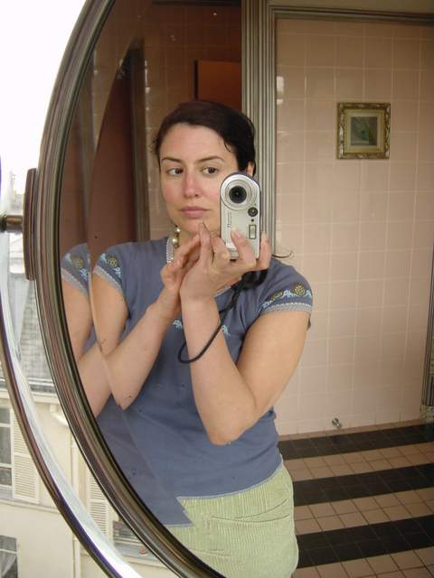
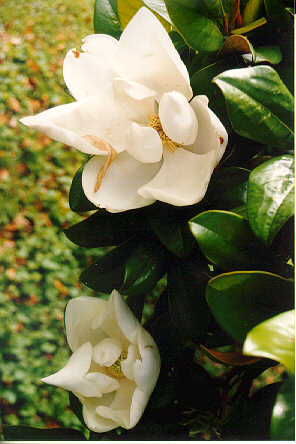

|
Home Us Pascale Graham Thornbush Family & Friends SeaMaster Wedding France 2001 Lockie's Art What's New |
Lockie Marie Hunter
(aka Lockie Montgomery or Marie Montgomery)  To know me is to know my geography. The places I have lived have shaped who I am. A transplanted hillbilly, Lockie was born in the hills of Tennessee in the 60's—the LATE 60's, mind you. She moved to Massachusetts and attended Hanover Junior High and Hanover High School in the 70s-80s. Since she had never lived outside of Tennessee her accent was not a very New England-friendly one. She spent the first year or so just trying to understand the natives. Additionally, they asked such questions of her as, "Do you know Gomer Pyle personally?" It was enlightening for all. Junior High being very educational and formative years (Judy Bloom books, Bonne Bell strawberry lip smack gloss, and grape scented stationary adding greatly to Lockie's personal growth), she matured into a fine young adult. The time when, at 14 years of age, she held her breath until she turned blue because she was denied going to the Cape with the high school seniors was not her proudest moment. Nevertheless, Incidents like this were rare, or at least they have been expunged from the collective family memory/database. As she was finally learning how to spell Massachusetts correctly, Lockie moved again in the early 80's to finish her high school in Tennessee. Now firmly Yankeefied, her hometown Tennessee friends could not understand a word she uttered. She attended Dobyns-Bennett High School. Aside form the 'running over the driver's ed teacher's foot incident', the remainder of her high school years passed relatively peacefully.  Clemson University, (Go Tigers!) in South Carolina was her University of choice. Might as well stay in the south—let's not change accents again. It was here that she met Donnadonnadonna. Click here for college photos-warning big hair!!! Clemson was a wonderful time. Since Clemson was a land grant agricultural college, Lockie gained a secondary education in plants. She even had neighbors majoring in 'dirt'. Often plants and trees were labeled around campus. The first time Lockie saw a label for -Water Oak- she thought it a note for the gardener to mist the tree. The grounds of the university were always blooming. Clemson has tons o' Magnolias (see pic at right) and the lockiedonna combo loved to pluck them from trees. Not everyone appreciated Clemson. Some called it MOO U due to its ties with agriculture. Zac attended University of Chicago and has choice words about Clemson. Click here for Zac's bad Clemson joke. :(Lockie graduated Clemson in 1990 and headed straight to San Francisco where she lived through most of the 90's. Homesick, lacking seasons, and noting absence of fireflies, Lockie found herself back on the east coast in the late 90's. She met Zac in Atlanta (blind date) and settled down in Boston. Lockie developed a taste for urban life while in S.F.—this is the proper nickname for the city. Don't call it Frisco. (An aside re: urbanity. We just had a new corner convenience store move in across the street from our Brownstone. Thank God, as we were quite exhausted from walking the requisite block to the closest store.) After living in Baghdad by the Bay—another acceptable SF nickname perhaps coined by columnist Herb Cain—Lockie was sushi spoiled—that is to say she needed to live in a setting with a variety of ethnic backgrounds and the accompanying food, cultures, music etc. Boston fit the bill and had snow—BONUS! We should note that Zac was working in the Hub—acceptable nickname for Boston—don't call it Beantown—and asked Lockie to move up for the WINTER! (Isn't one supposed to move south for the winter?) In the winter, Boston has a serious Magnolia shortage. Zac had been living in California, the American South and New England as well, and we joke that we were chasing one another around the country in a triangular pattern until we found each another. Since living in Boston Lockie has become a yoga girl. In 2002 Lockie gave birth to a beautiful, vocal daughter, Pascale Sligh Hunter. In 2004 she gave birth to a cute, giggly son, Graham Sargent Hunter. They have inspired her work and her life in countless ways. Now that Lockie and Zac have replaced themselves on the planet, they are done with reproducing any more humans. In this new millennium, Lockie is currently on sabbatical from the real world while she attends Boston's Emerson College where she is earning her MFA in creative writing. Lockie calls this retirement, but Zac insists that it is just a sabbatical and that she begin gainful employment at 8 a.m. on Tuesday May 15th of 2007—commencement for her master's degree being on Monday May 14th of 2007. Her fiction and essays have been published in various publications including The Morning News, Opium, Chick Flicks, MadLovin Mama, Southern Hum, Seattle Writergrrls, The Emerson Review, Muscadine Lines; a Southern Journal, ken*again, the literary magazine, Wild Violet, Literary Mama, and Foliate Oak. She has won an EVVY award for best prose. Lockie also writes a humor column for Mad Hatter Review titled "Lockie Confidentials." |
© TaterCo: We've got eyes for your business